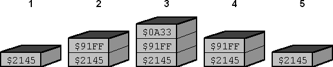

Here is a pictorial example of a stack that grows up. The top of the stack is currently address $1009 and this is also the value of the stack pointer. If we were to push an entry onto this stack, we would write to $1009. As this action would move the stack top one byte forward, the stack pointer must then be incremented so that it once again points to the top of the stack. On the flip side, if we wished to pop an entry off this stack, we first decrement the stack pointer because it currently points to nothing, then read from that address.
| $1000 | $1001 | $1002 | $1003 | $1004 | $1005 | $1006 | $1007 | $1008 | $1009 | $100A | $100B | $100C | $100D |
|---|---|---|---|---|---|---|---|---|---|---|---|---|---|
| stack pointer |
|||||||||||||
| 8C | DB | FA | 47 | 46 | 1F | 0D | B8 | 03 | |||||
LD HL, (stack_ptr) ; Load stack pointer
LD (HL), E ; Push the low-order byte
INC HL ; Move stack pointer to next byte of available space
LD (HL), D ; Push the high-order byte
INC HL
LD (stack_ptr), HL ; Save new stack pointer
Example: Pop into DE the top 16 bits off a stack that grows up.
LD HL, (stack_ptr)
DEC HL ; Move stack pointer to next byte on stack
LD D, (HL) ; Pop the high-order byte
DEC HL
LD E, (HL) ; Pop the low-order byte
LD (stack_ptr), HL ; Save new stack pointer
What about a stack that grows down? The same rules apply, we just change the direction the stack pointer moves.
In the picture the top of the stack is currently address $FF00 and this once again must be the value of the stack pointer.
If we were to push an entry onto this stack, we would decrement the stack pointer so it pointed to an empty slot, then
write to it.
| $FEFA | $FEFB | $FEFC | $FEFD | $FEFE | $FEFF | $FF00 | $FF01 | $FF02 | $FF03 | $FF04 | $FF05 | $FF06 | $FF07 |
|---|---|---|---|---|---|---|---|---|---|---|---|---|---|
| stack pointer |
|||||||||||||
| 8C | DB | FA | 47 | 46 | 1F | 0D | B8 | ||||||
LD HL, (stack_ptr)
DEC HL ; Move stack pointer to next byte of available space
LD (HL), D ; Push the high-order byte
DEC HL
LD (HL), E ; Push the low-order byte
LD (stack_ptr), HL ; Save new stack pointer
Example: Pop the top 16 bits of a register that grows down into DE
LD HL, (stack_ptr)
LD E, (HL) ; Pop the low-order byte
INC HL
LD D, (HL) ; Pop the high-order byte
INC HL
LD (stack_ptr), HL ; Save new stack pointer
| PUSH reg16 | Stores reg16 to the stack. reg16 is any 16-bit register. |
| POP reg16 | Retrieves reg16 from the stack. reg16 is any 16-bit register. |
DEC SP
LD (SP), H
DEC SP
LD (SP), L
And that POP HL is identical to
LD L, (SP)
INC SP
LD H, (SP)
INC SP
Note that you can only PUSH/POP registers
in pairs. So if you just want to store E, you would have to do
PUSH DE.
PUSH AF
POP IX
Here is a sample code fragment that manipulates the stack with a diagram showing how the
stack looks through operation.
LD HL, $2145
PUSH HL ;1
LD DE, $91FF
PUSH DE ;2
LD BC, $0A33
PUSH BC ;3
POP AF ;4
POP HL ;5
POP BC

Take care with the stack. Since the operating system also uses the stack, you really have less than 400 bytes of stack space to work with. Nevertheless, this should be sufficient for all your needs. What you should be more concerned about is leaving the stack in the exact same state is was as when the program started. I don't think I need to tell you the ramifications of not heeding this warning.